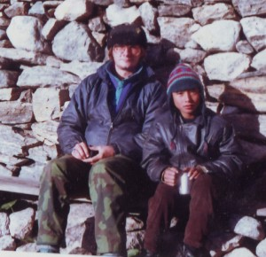
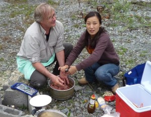
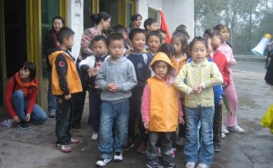
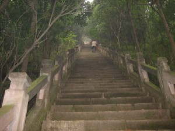
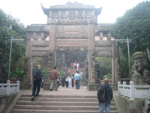
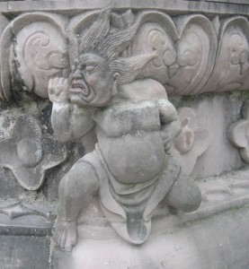
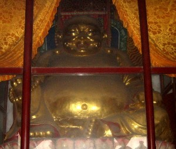

Rubbing the Laughing Buddha’s Belly for Luck
This is a story about a hike I was on with school children and their parents — one that I wasn’t expecting and was ill-prepared for. It took place last year (2009) on October 25th during the Sichuan fall season. I’m 58 now, fatter than when I hiked to Hemkund in north India.

- A much younger Dhane (at left)

It’s a good thing because I was fitter, more than 15 years younger then, and the Hemkund hike took two days and went up to 5,000 meters in altitude. This hike was more appropriate for who and what I am now. It was two hours up a steep hill but the hike still took as much out of me as the earlier trip in India. Old age is creeping up on me.
I am now working in a Chinese kindergarten and my students are mostly in the 2-4 years old category — they don’t challenge me to very many feats of physical strength but keep my spirit young on a daily basis. It is a fair trade-off, in my opinion. I have been in Chengdu for the past 15 months and worked here previously — for a year and 8 months — beginning in the summer of 2003. Then, I began my stay in Chengdu with a hike into the mountains west of Chengdu. There are a group of sacred Taoist mountains not far from Dujiangyan with the most famous of them called Mt. Qingcheng. Not far from that mountain is Tianshi Cave where I walked with my new boss and his family back then. I remember the cold water spilling off of the cliff we climbed on a set of ‘rusty’ steps clinging to the side of the rock face. At the top was a dilapidated, fire-damaged Taoist shrine and the cave. Inside the cave, we followed a winding stream lit by hanging light bulbs into the dark and to a statue at the stream’s head. Ice-cold water gushed out of the cave wall, beneath the sage’s feet, and on out of the cave. Walking into the cave was like opening the door of a ‘walk-in’ freezer and as cold. That was my introduction to the Himalaya in Sichuan Province. I made other trips into the mountains back then and never had a premonition of the earthquake that struck them last year.
So, back in the present, I recently met a group of Chinese families who befriended me and who invited me on another trip into the mountains during the recent National Day holidays. We spent two nights in the mountains and got to know each other at a makeshift picnic in Bao Xing — a small town about 6 hours drive west of Chengdu. It is further south than the earthquake struck area and didn’t suffer much damage. Thus, tourism has slowly grown in that area. 

So, that was about two or three weeks ago. It is now after that refreshing, 2 week long holiday, and things have settled back into the day to day routine of a kindergarten teacher. Not that I am hard at work on that — it’s still only a part time occupation for me. That leaves me a lot of time to ruminate on other matters, study a little, research a few things on the internet, and wander around in town for good places to have a cold beer and put up my feet.
I didn’t get to do much of that yesterday. Shuwei, my new Chinese friend, a former student at a university in Tampa, Florida had shared stories about life there. I was a lawyer’s assistant in Panama City, Florida so we shared our impressions of life around the time of 9-11 in Florida. Anyway, Shuwei called me up on Saturday and told me about the trip the next day — this time, with a much larger group of parents and their children. A local university teacher has formed an organization and networked with Chengdu parents to create opportunities for the city kids to get out of the city on bi-monthly educational trips — discovering that life in the city is not all that Sichuan Province has to offer. So, we met at the toll gate to the freeway north of Chengdu and collected all the parents and kids — more than 15 cars of them. It was only an hour’s drive out into the countryside and through a small town to the next hamlet along the river. The day was overcast and foggy, but not cold.


I don’t remember the name of the temple but the picture gives it — albeit in Chinese. I will leave it for the reader to decipher for himself or herself. All I knew is that we were going up and that meant hard work for me. I get winded these days just carrying my bicycle up to my 3rd floor apartment. I wasn’t carrying my bike up the hill, though. I have done that in the hills around Kathmandu, in Nepal, before — including one time I was traveling with a student of mine. We ended up spending that night on the cold hillside — but that is another story. I guess I’ll have to post it sometime soon. Anyway, while the kids were at the bottom of the steps getting their name tags made out and directions issued, I set out after a couple already climbing the stairs with their 3 year old daughter. I reassured myself that if she could do it, I had no excuses for not tagging along.

With that little girl in sight and ahead of me, I started putting one foot up after the other. Climbing hills or mountains is mostly ‘psychology’. I told myself that if I could walk with my wife and her family for a week of 12 hour days in the Himalaya that this hike should be a sure thing. That thought boosted me up the first flight of stairs and onto the second. 

So, the hike began and went on with steeper and steeper sets of stairs. I was thankful for the railings and the relatively short and flat sections between sets of steps. My climb to the top took 2 hours and at least a kilogram of sweat. At the second level, we came across a road that I surmised winds its way to the top. Later, I was to discover I was right. But, this was not a trip by car, instead on foot. So, we continued the climb, passing through a hillside cemetery and on up the hill. Next, we came to a village surrounded by orchards on the terraced hillside. I was reminded of my hikes in Nepal and felt a powerful surge of memories that almost convinced me I was back there. A lone village woman was planting bean seeds under the trees in the orchard and I stopped to watch her. I remembered planting corn and beans behind the house in Thailand where I visited with Burmese children. I still have a lot left to learn if I ever want to become a successful farmer. I think the only way to learn would be to live with one. Perhaps, that is still something I will do in this life. On up the hill, we crossed the road a couple of more times. I stopped to buy a bottle of yogurt drink from a woman standing beside the road and watched her little boy toddling over. I hadn’t escaped the kindergarten after all. We started to climb through what was more of a forest on the hillside and then through what looked like a tunnel under a stone wall. Shuwei told me that the temple at the top was within the remaining walls of a stone fortress built here more than a thousand years ago. 

As temples go, I’ve seen bigger and grander ones and I’ve seen those in a more humble state. We all rejoined each other as a group and made our way to the dining hall for a refreshing, vegetarian lunch. We were destined to spend a few hours here hanging out with the kids and playing games. I was ‘volunteered’ to read a few story books in English. The kids had received free copies of the books as part of the program. It seemed OK to me. I read them a book about ‘bugs’ but couldn’t help but chuckle on the inside as I remember my own lessons taught me by Burmese kids in Thailand. At that time, I made a small video called ‘Burmese Bug 101’ as one of my kids instructed me in the fine art of finding, catching, killing, roasting and eating big, black crickets. That is yet another story for another day. I didn’t know what to make of the story about ‘Froggy and his Red Pajamas’ — I just read it with a deadpan expression on my face. I have a lot of experience camping and hiking — mostly as a Boy Scout when I was much younger. I also took kids from Denver, Colorado on trips into the Rocky Mountains so I will probably suggest this as an activity to the group that I could teach. That is for the future and another page on this blog somewhere — I guess I’ll have to create a ‘camping’ page.




Filed under: China and
Leave a Reply